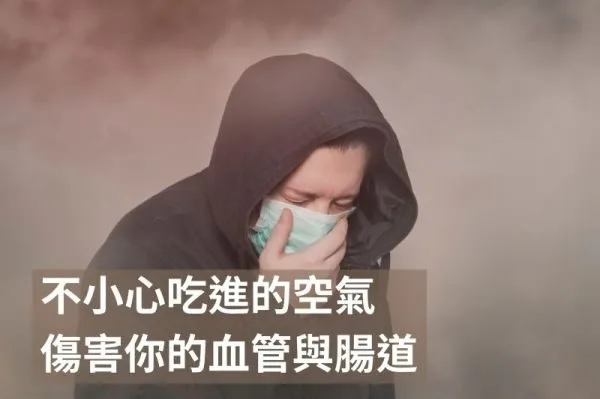

低總膽固醇未必更健康
今天有一位患者在門診請叫我一篇文獻，我回家讀完了覺得很有意思，在這邊分享給大家。傳統觀念與指引普遍認為血液中總膽固醇（TC）值「越低越好」，許多衛生專家強調應將TC控制在200 mg/dL以下。然而，2019年發表於《Scientific Reports》的一項橫跨1,280萬名韓國成年人的大型前瞻性世代研究對此觀點提出了挑戰。研究結果顯示，TC與全因死亡率之間呈U型曲線關係，也就是說過低的總膽固醇反而與更高的死亡風險相關。
簡單看一下這項研究的背景資料。這項研究利用韓國國民健康保險署（NHIS）的龐大資料庫進行分析。納入對象為2001–2004年間參加例行健檢的NHIS受保成人，總樣本數高達12,815,006人，年齡範圍18–99歲。研究屬於前瞻性世代研究設計：追蹤這批樣本人至2013年底，期間透過全國居民登記系統紀錄死亡事件。研究者評估不同膽固醇水平與日後死亡率的關聯，並調整了年齡、性別、吸菸、飲酒、運動、血壓、血糖、體重指數及既往疾病史等潛在混雜因素如此龐大的樣本與超過10年的追蹤，使研究在統計上具備充足的檢定力，可探索各種TC水平（甚至低至120 mg/dL以下）與死亡風險之關聯。
此研究的主要強項在於樣本規模空前龐大且具前瞻性，幾乎完整涵蓋韓國一般成年族群，並透過全國性系統確保死亡追蹤的完備。另外，族群的種族與醫療背景相對均一，均受到同一健康照護體系覆蓋，減少了環境與醫療資源差異的干擾。研究亦特別分析了不同年齡與性別亞組的情況，提供細緻的分層結果。
此研究也存在若干限制。首先，缺乏血脂用藥資訊，部分高膽固醇者可能因服用降脂藥物而降低了風險，導致高TC危害被低估（不過作者指出，韓國高膽固醇者中當時僅約10%服藥，影響應屬有限）。第二，分析僅有總膽固醇數據，無法區分LDL、HDL等脂蛋白亞型；鑒於現今治療更著重這些分數，缺乏此資訊限制了結果對臨床個體的直接應用。第三，死亡原因資料不可獲取，無法進一步釐清低膽固醇與特定死因（如癌症、肝病等）之關聯強度差異。最後，樣本侷限於韓國人，雖然不同族群在膽固醇與死亡的形態可能類似。作者提醒這些限制提醒我們在將結果推廣至其他族群或制定指引時需謹慎考量。
精彩的來了，研究的核心發現總膽固醇與全因死亡率呈現明顯的U型曲線關係。以下盡量將結果重點整理，以白話的方式說明以利各位讀者了解
1. 不論整體樣本，或按性別、年齡分組後，皆觀察到類似的U型關聯。這表示無論男性或女性、年輕或年長族群，過低或過高的總膽固醇水準都伴隨較高的死亡率，而中等區間則風險最低。
2. 最低死亡風險的總膽固醇(TC)區間高於傳統建議值：綜觀全體，死亡率最低的一段總膽固醇約在210–249 mg/dL之間。死亡率最低的區間明顯高於目前普遍建議的「理想」上限200 mg/dL，這也是門診病人詢問我的最主要原因，「為什麼這跟一般傳統建議的膽固醇越低越好似乎有矛盾呢？」。我們可以發現這種U型分布及使用年齡和性別去區分，仍然是有這個趨勢的。
3. 在總膽固醇低區間每升高1 mmol/L（39 mg/dL）可使死亡風險降低約23%，而在總膽固醇高區間每升高1 mmol/L則使死亡風險僅增加約7%。也就是說，偏低膽固醇所隱含的危險程度，約為偏高膽固醇的3倍。此現象暗示「低膽固醇狀態可能比高膽固醇更能指示健康的風險程度」。
4. 年齡也可以發現有趣的關係：高膽固醇對年輕人影響比較大，老年人則是比較害怕低膽固醇的風險。例如，18–44歲組別中TC每升高1 mmol/L所增加的死亡風險高於75歲以上族群。另一方面，中老年人若膽固醇偏低，其不良影響更值得關注。白話一點就是，隨年齡增長，高膽固醇的相對危害在減弱，而低膽固醇危害相對凸顯 。
可能大家看到這裡已經頭很痛了，為什麼這個文獻和我們傳統上認為「膽固醇越低越好」的論述相互矛盾呢？我認為這可能和以下兩個原因有關：
1. 是我們長期把膽固醇當成「只有壞處的東西」，但這本身就是一個過度簡化的理解。膽固醇其實是身體非常重要的基礎材料，它構成細胞膜、影響細胞穩定性，也是合成性荷爾蒙、腎上腺荷爾蒙與維生素 D 的原料，同時參與膽汁酸生成，幫助脂肪消化。在大腦與神經系統中，膽固醇更是維持神經傳導與髓鞘結構不可或缺的元素。當膽固醇被過度壓低，身體可能會出現荷爾蒙不足、免疫功能下降、記憶與情緒穩定度變差等問題。也就是說，把膽固醇視為單純的「壞東西」，本身就忽略了它在生理平衡中的必要角色。
2.「低膽固醇不一定代表健康」，反而有時是身體狀況不佳的警訊。許多研究都發現，異常偏低的膽固醇常見於高死亡風險的疾病族群，例如癌症、慢性肝病、慢性肺部疾病等。這篇韓國研究的作者也明確指出，總膽固醇過低未必是健康的象徵，而可能反映潛在疾病的存在。因此，看到膽固醇偏低時，更合理的反應不是放心，而是回頭檢視整體健康狀態，而不是直覺認為「越低越好」。
當然，我們不能把每天看到的一篇文獻當作金律，也不能因為這篇研究，就反過來說「膽固醇高一點比較好」。真正該做的不是在兩個極端之間來回擺盪，而是重新檢視一個問題：我們是不是過度迷信單一數字，卻忽略了它背後代表的整體代謝狀態。
這也是為什麼在臨床上，我始終不太認同「看到膽固醇就直接下結論」這種思維方式。年輕、胰島素阻抗明顯、三酸甘油脂高、HDL 低的患者，高膽固醇背後代表的風險，和一位年長、營養狀態不佳、慢性發炎、膽固醇一路下滑的患者，完全不是同一件事。把他們丟進同一個「200 mg/dL 以下才算安全」的框架，本身就是一種過度簡化。
你會怎麼看待這份文獻呢？歡迎和我分享喔！傾聽患者的觀點是非常重要的，因為我們可以從自己和患者的觀點碰撞得到非常多的啟發，永遠不要讓自己成為一位不會「傾聽」的醫師。
 空腹小雞跟思思醫師一起斷食，順便養一隻小雞來養小雞 →
空腹小雞跟思思醫師一起斷食，順便養一隻小雞來養小雞 →
好朋友週信
一週一封：《健康駭客週報》這集的研究重點，加上家醫專欄這週的新文章。免費，隨時可以退訂。
延伸閱讀

納豆，有效降低心血管風險的超級食物
納豆中的納豆激酶能有效溶解血栓，經常食用納豆可降低約25%的心血管疾病死亡風險，效果遠優於其他大豆製品。

PREDIMED 研究：地中海飲食真的能降低心血管疾病風險嗎？
PREDIMED試驗追蹤7,447名高風險者4.8年，結果顯示地中海飲食加橄欖油或堅果，主要心血管事件風險比低脂飲食低28-31%。

不小心吃進的空氣，傷害你的血管與腸道
作者引用《Environment International》研究指出，吞入的超細懸浮微粒會改變腸道菌相、加重動脈硬化與肝臟氧化壓力，並建議護腸。